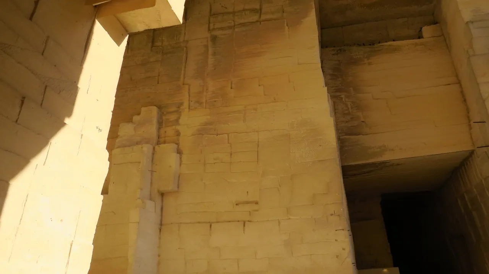

{kind=link}

Glanum
기원전 6세기 켈트 성소에서 헬레니즘 도시를 거쳐 로마 제국의 온천 휴양도시로 번영했던 거대한 고대 발굴 유적지. 갈리아에서 가장 완벽하게 보존된 기원전 1세기 로마 영묘와 개선문 '레 장티크(Les Antiques)'.

레보드프로방스 북쪽 알피유 산자락에 위치한 옛 백색 석회암 채석장(Grandes Carrières)을 개조하여 2012년 개관한 세계 최고의 몰입형 디지털 미디어 아트 센터다.
높이 15m에 달하는 거대한 석조 기둥과 7,000㎡ 면적의 수직 암벽, 천장, 바닥 전체에 100여 대의 최첨단 고화질 프로젝터와 입체 음향 시스템을 투사하여, 관람객이 거대한 그림 속을 직접 걸어 들어가는 듯한 압도적인 공감각적 체험을 선사한다.
과거 영화감독 장 콕토(Jean Cocteau)가 1959년 영화 『오르페의 유언』을 촬영했던 신비로운 지하 석굴 공간 자체가 지닌 장엄함과 현대 미디어 기술이 결합한 예술적 명소다.
"단순한 미술관 관람을 넘어, 시원하고 어두운 지하 채석장 동굴 전체가 빛과 웅장한 클래식 음악으로 요동치는 거대한 예술 카펫에 둘러싸이는 특별한 감각적 휴식이다." 레보 마을이나 생레미 유적지와 연계하여 60~75분간 서늘한 동굴 속에서 상영 프로그램을 감상하기에 완벽하다 (동굴 내부 온도가 14~16℃로 유지되므로 겉옷 준비 필수).
| 운영시간 | 요일 교대 — 피카소·프리다 월·금·일 / 「Océan」 화·수·목·토 |
|---|---|
| 휴무 | 연중무휴 (공휴일 포함 매일. 12/25·1/1 은 11:00~18:00 단축) |
| 요금 | 성인 €13–16.50 (2026) |
| 예약 | 온라인 예약 권장 (무료 대상자는 예약 불필요). 9월 09:30~19:00, 마지막 입장 폐관 1시간 전 |
| 항목 | 상세 정보 |
|---|---|
| 위치 | Route de Maillane, 13520 Les Baux-de-Provence |
| 운영 시간 | 매일 09:30–19:00 (시즌별 변동, 마지막 입장 1시간 전) |
| 입장료 | 일반 성인 €14.50~€16.50, 청소년(7–25세) €12.00, 7세 미만 무료 |
| 사전 온라인 예매 (필수 권장) | 공식 웹사이트(carrieres-lumieres.com)에서 입장 시간 사전 예약 권장 (현장 매표 시 대기열 발생) |
| 주차장 | 전시장 바로 앞 전용 무료 주차장 완비 (단, 만차 시 레보 마을 공영 주차장 이용 후 도보 10분) |
| 복장 준비 | 가디건 또는 바람막이 겉옷 필수 (내부 기온 14~16℃) |
기원전 6세기 켈트 성소에서 헬레니즘 도시를 거쳐 로마 제국의 온천 휴양도시로 번영했던 거대한 고대 발굴 유적지. 갈리아에서 가장 완벽하게 보존된 기원전 1세기 로마 영묘와 개선문 '레 장티크(Les Antiques)'.

알피유(Alpilles) 산맥 해발 245m 석회암 절벽 위에 우뚝 솟은 중세 독수리 요새 마을. 자연 암반과 성벽이 하나로 결합된 레보 성채(Château des Baux) 폐허와 올리브 계곡 대파노라마.

세계적인 식물학자 파트리크 블랑의 300㎡ 거대한 수직 정원(Mur Végétal) 외벽 아래 40여 개 프로방스 전통 식재료 좌판이 모인 아비뇽의 활기찬 실내 중앙 미식 시장.

14세기 가톨릭 교황청이 로마를 떠나 68년간 머물렀던 서유럽 최대의 중세 고딕 요새 궁전. 베네딕토 12세의 구궁전과 클레멘스 6세의 신궁전, 마테오 조바네티의 프레스코화와 히스토패드 3D 증강현실 복원.

12세기 론(Rhône) 강을 건너 교황령 아비뇽과 프랑스 왕국을 잇던 920m의 유일한 석조 다리. 소빙하기의 거센 홍수로 22개 아치 중 4개와 2층 생니콜라 예배당만 남은 유네스코 세계유산.

우제스의 외르 샘에서 고대 로마 식민도시 님(Nîmes)까지 50km를 오직 중력만으로 흐르게 한 기원 1세기 3층 로마 수도교. 높이 48.8m 세계 최고(最高)의 고대 수력 토목공학 걸작(유네스코 세계유산).